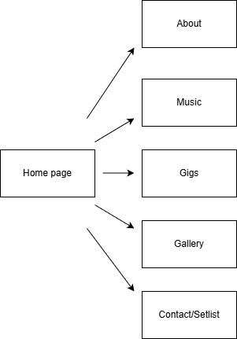
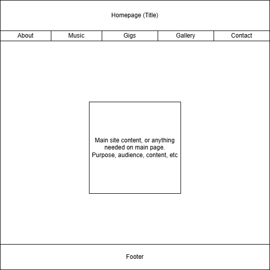

Client Project Overview
This document provides an overview of the project, including its objectives, scope, and deliverables.
Purpose: SoundStage is a mobile-first mini-site for an indie artist/DJ that centralizes essentials, bio, playable tracks, gigs with maps, gallery, and a contact/setlist form, so fans and promoters can quickly discover the music and take action. A client-side “Music Explorer” (read-only iTunes Search API) encourages discovery of related tracks without server-side storage. All interactivity (jQuery UI, Web Audio visualizer, AJAX fetch) remains strictly client-side to meet course constraints while keeping the site fast, accessible, and easy to maintain.
Intended Users:- Fans & prospective fans
- Event organizers/venues
- Classmates/peers evaluating the project
Overview of Content:
- Artist Bio: Artist background, influences, and career highlights.
- Music Samples: Playable tracks with a client-side Music Explorer for discovering related music.
- Gigs: Upcoming events with embedded maps for venue locations.
- Gallery: Photos and videos from past performances.
- Contact/Setlist Form: For fans to reach out and request songs for events.
Client Information
Client Name: Adam "Sussy" Barnes
Organization(s) client is associated with: University of North Carolina at Charlotte
Client Email Address: abarne94@charlotte.edu
Client Phone Number: [Private]
Site Map:
Wireframe:
Homepage:
Name of Page: Homepage
Purpose of Page: Introduce the artist, provide navigation to other sections, and highlight key content.
Audience: Fans, event organizers, and peers.
Content Elements:- Artist bio section with a brief overview and photo
- Featured music tracks with play buttons
- Upcoming gigs section with dates and locations
- Gallery preview with thumbnails
- Contact form for booking inquiries
Input/Validations: None
UI Elements:- Navigation menu with links to other sections
- Search bar for finding specific tracks or gigs
- Buttons for playing music tracks
- Interactive map for gig locations
Action: Navigate to other sections of the site
Notes: HTML/CSS validator links in footer
About Page:
Name of Page: About
Purpose of Page: Provide detailed information about the artist, including background, influences, and career highlights.
Audience: Fans and event organizers.
Content Elements:- Detailed artist biography
- List of musical influences and inspirations
- Career highlights and achievements
- Photos of the artist
Input/Validations: None
UI Elements:- Image gallery for artist photos
- Text sections with headings for easy navigation
Action: Read about the artist
Notes: Content will be engaging and informative to connect with the audience
Music Explorer Page:
Name of Page: Music Explorer
Purpose of Page: Allow users to explore and discover related music tracks using the iTunes Search API.
Audience: Fans and music enthusiasts.
Content Elements:- Search bar for entering artist names or track titles
- Display area for search results with track details and play buttons
- Related tracks section based on user searches
Input/Validations: Search input validation to ensure valid queries
UI Elements:- Search bar with submit button
- Dynamic display area for search results
- Play buttons for each track
Action: Search for and play music tracks
Notes: Utilizes AJAX to fetch data from the iTunes API without server-side storage
Contact/Setlist Form Page:
Name of Page: Contact/Setlist Form
Purpose of Page: Provide a way for fans and event organizers to contact the artist and request songs for events.
Audience: Fans and event organizers.
Content Elements:- Contact form fields (name, email, message)
- Setlist request fields (event date, requested songs)
- Submit button
Input/Validations: Form validation for required fields and proper email format
UI Elements:- Text input fields for name and email
- Textarea for message and setlist requests
- Submit button
Action: Submit contact and setlist requests
Notes: Form submissions will be handled via email (no server-side storage)
Gigs Page:
Name of Page: Gigs
Purpose of Page: Display upcoming events and gig details with embedded maps for venue locations.
Audience: Fans and event organizers.
Content Elements:- List of upcoming gigs with dates, venues, and locations
- Embedded maps for each venue location
- Links to purchase tickets (if applicable)
Input/Validations: None
UI Elements:- Interactive maps for venue locations
- Buttons/links for ticket purchases
Action: View gig details and navigate to ticket purchases
Notes: Maps will be embedded using a mapping service (e.g., Google Maps)
Gallery Page:
Name of Page: Gallery
Purpose of Page: Showcase photos and videos from past performances.
Audience: Fans and music enthusiasts.
Content Elements:- Photo gallery with thumbnails and lightbox view
- Video section with embedded performance videos
Input/Validations: None
UI Elements:- Thumbnail images for photos
- Embedded video players
Action: View photos and watch performance videos
Notes: Lightbox functionality for photo viewing will be implemented using jQuery UI